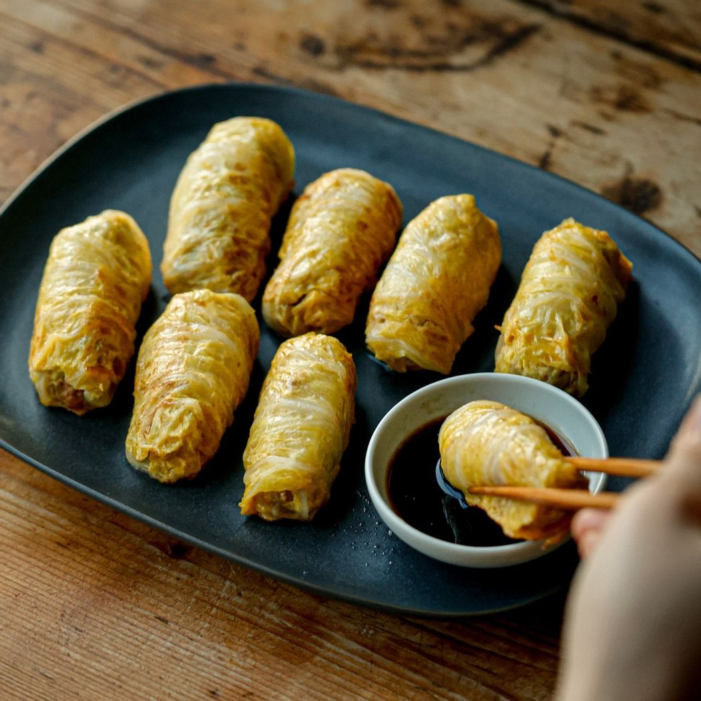
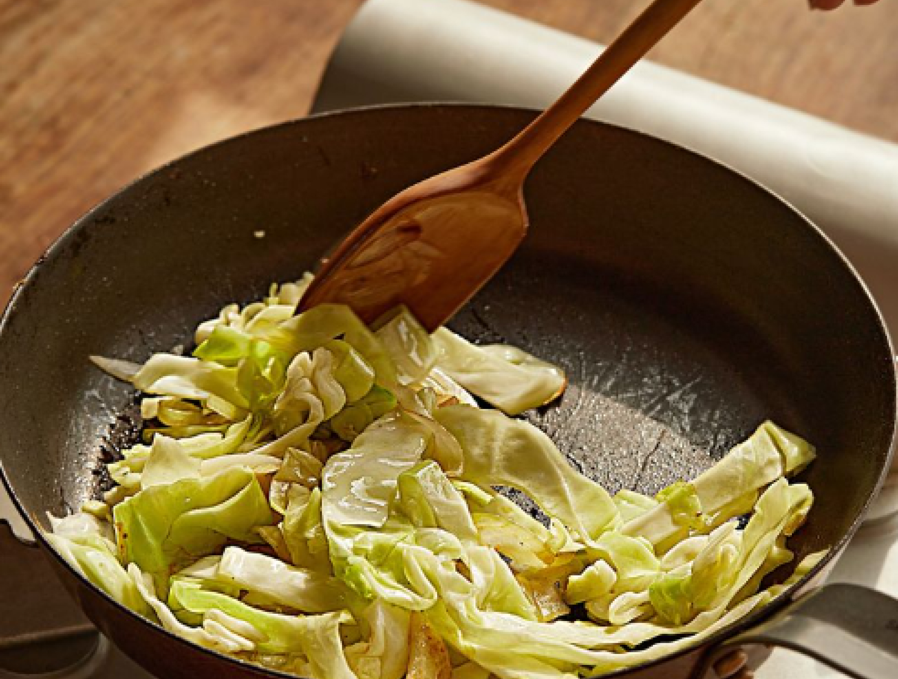
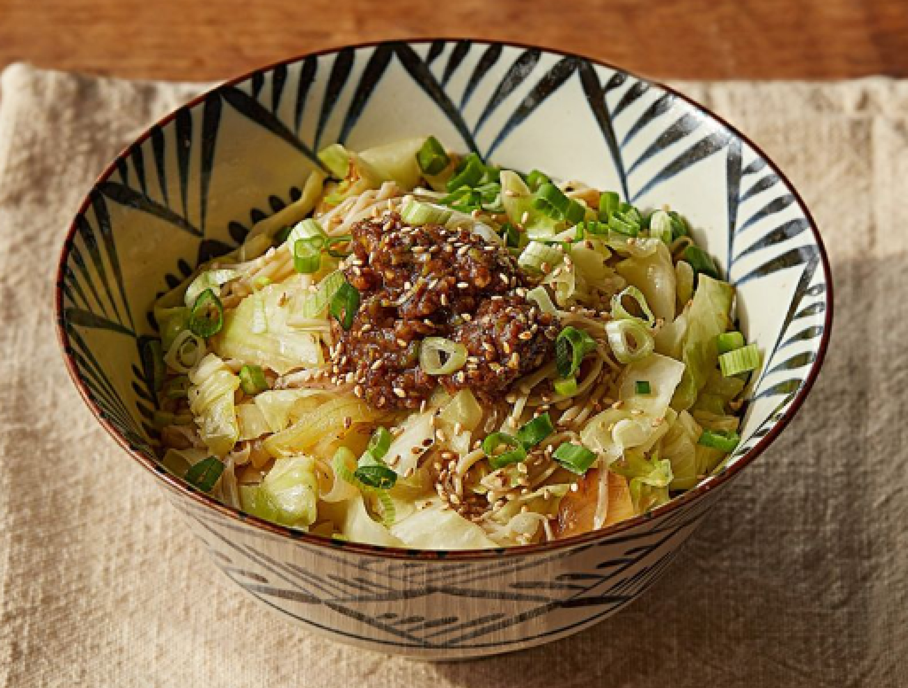
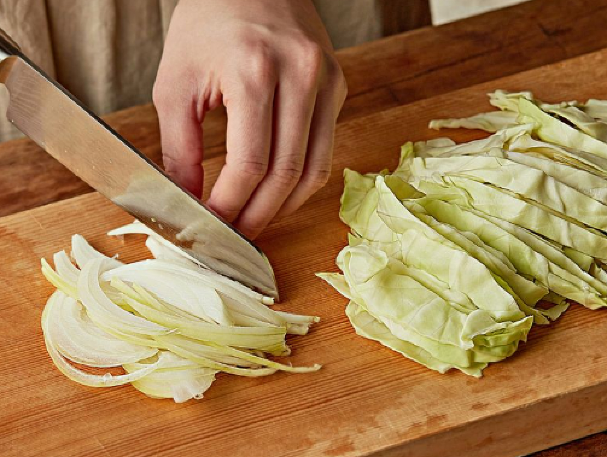
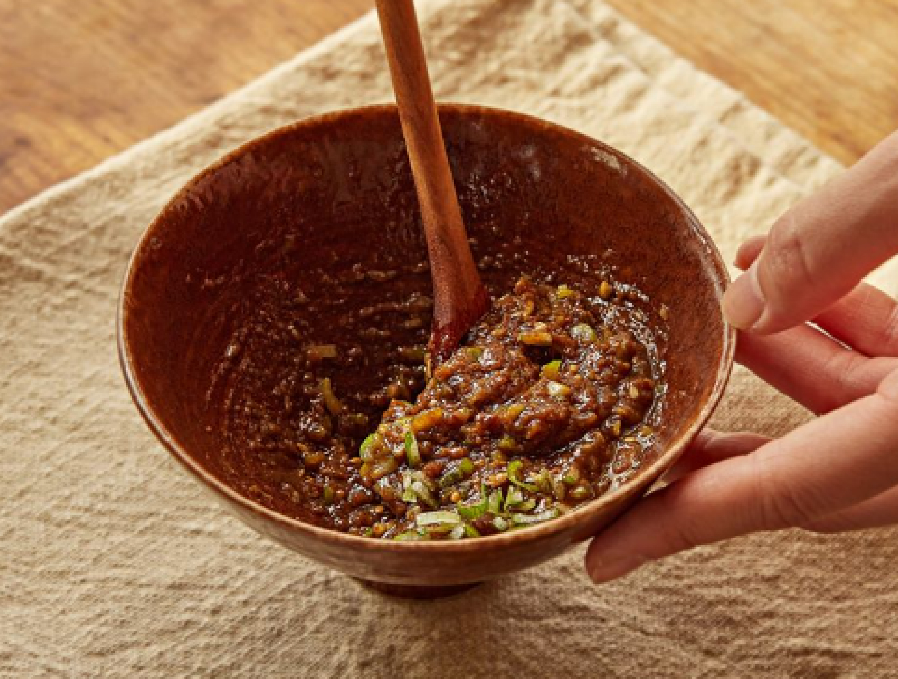
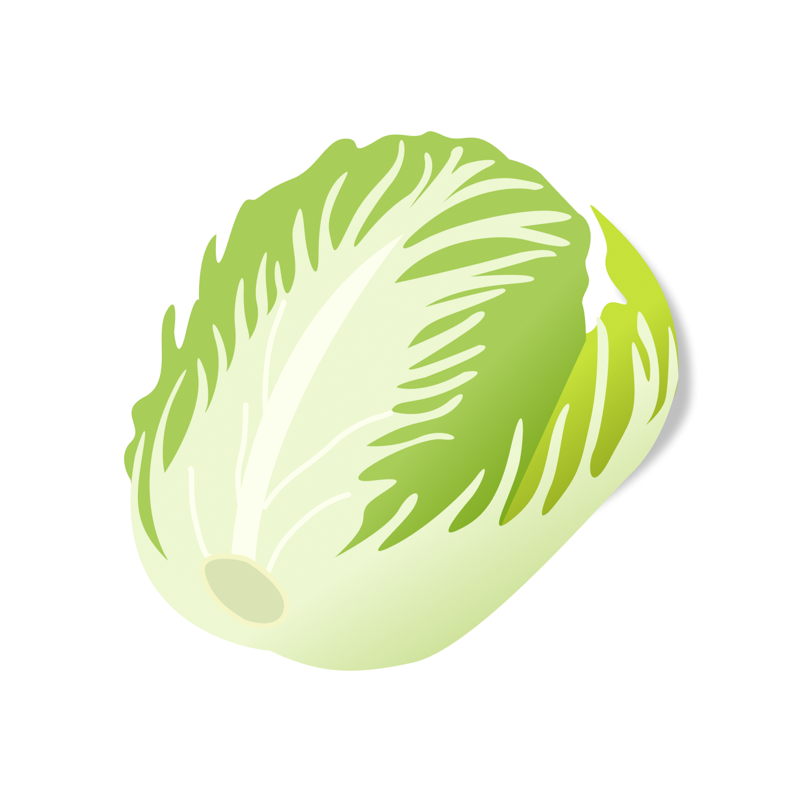
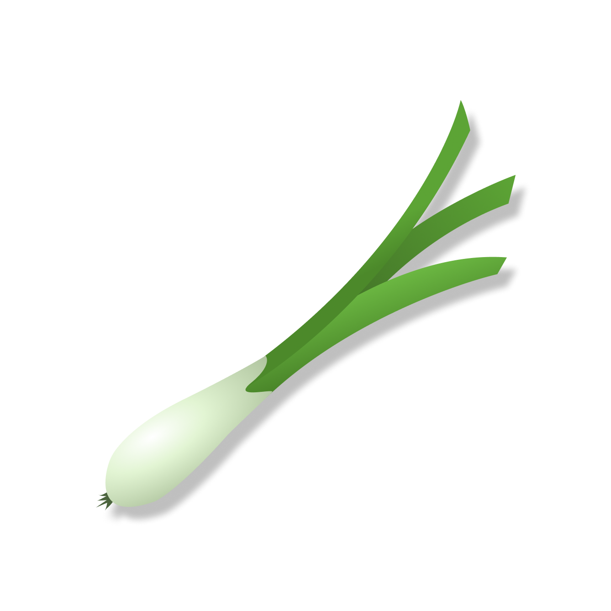

RECIPE
: 배추를 이용한
Home
Recipe
Calculation
Recommendation

두부와 고기를
수분이 날아가도록
볶아주세요.


간장 한 스푼에
고추, 참기름을 넣고
잘 섞어주세요.
물기를 짠 배추에
준비해둔 속재료를
위에 펼쳐주세요.
back

알배추를 한 장씩 뜯어주고,
잘 씻어 준비해주세요.
찜기에 알배추를
잘 펴주고 10분 정도
쪄주세요.

찐 배추를 식혀두고
다 식혀주었으면 물기를
어느정도 짜주세요.
next
back
그리고 김밥을 싸듯
잘 말아주시고 먹기좋은
크기로 썰어주세요.
그럼 양배추 롤 완성 !
next
 